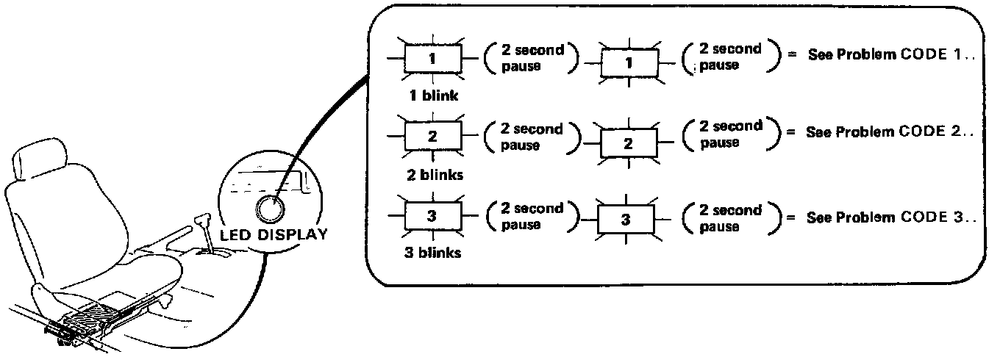

Reading Diagnostic Trouble Codes

How to Access Trouble Codes
When the PGM-FI warning light has been reported on, turn the ignition on, move the front passenger seat to the rear position and observe the LED on the front of the ECU. The LED indicates a system failure code by blinking frequency.